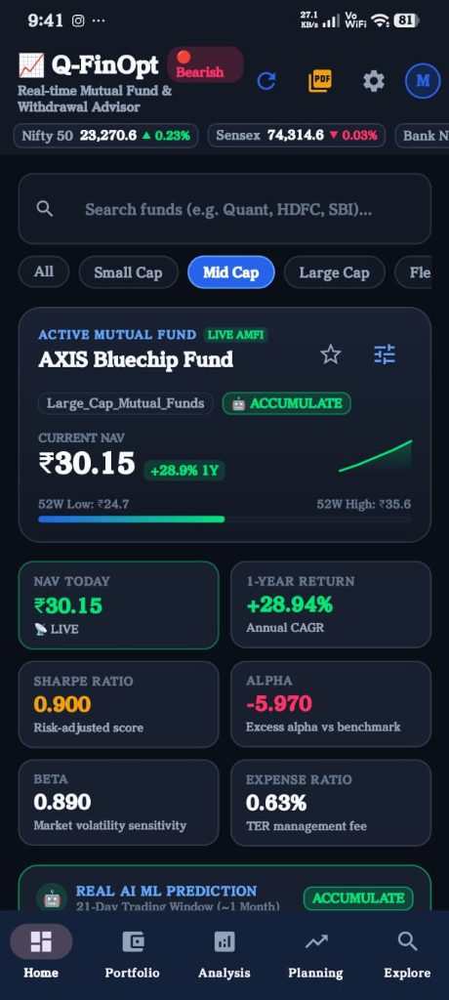
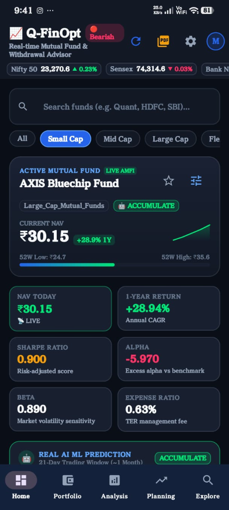
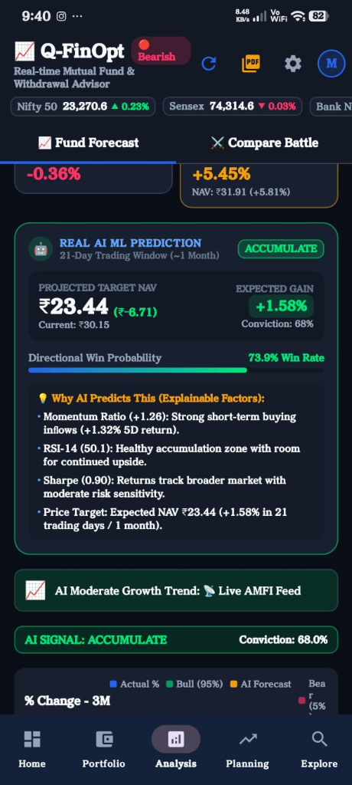
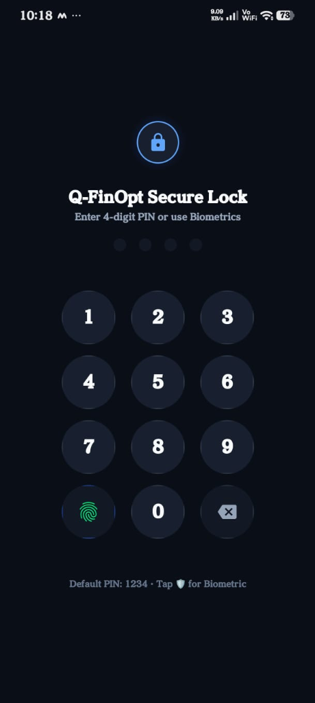
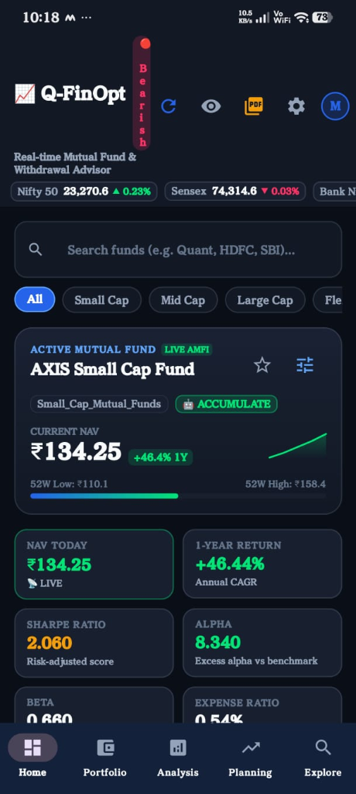

QFinOpt
AI-Powered Mutual Fund Research, Monte Carlo Risk Simulation & Intelligent Portfolio Optimization
Democratizing institutional-grade quantitative finance, risk-adjusted forecasting, and optimal withdrawal timing for every Indian investor.
The Indian Retail Investment Dilemma
The 97% Regular Plan Trap
Over 97% of Indian mutual fund accounts are locked in Regular Plans. Investors unknowingly forfeit ₹50,000 to ₹3,00,000 in hidden distributor commissions over a 10-year period.
Zero Risk-Adjusted Metrics
Retail applications only show trailing returns (1Y, 3Y, 5Y). Critical institutional indicators like the Sharpe Ratio, Sortino Ratio, CAPM Alpha, Beta, and Maximum Drawdown are completely absent for retail users.
Misleading Linear Projections
Traditional calculators assume unrealistic, straight-line growth (e.g., "12% every single year"). Markets fluctuate with volatility, sequencing risk, and cyclical drawdowns that standard calculators ignore.
No Scientific Exit Guidance
Investors know when to buy through SIPs, but have zero quantitative guidance on when to redeem, rebalance, or withdraw safely without destroying their retirement corpus.
QFinOpt: Full-Stack Financial Engineering
AI Return Forecaster
Gradient Boosting ML model trained on 5-year AMFI NAV history predicting 21-day forward trends with 74.01% directional accuracy and actionable Buy/Hold/Exit confidence scores.
Monte Carlo Simulation
1,000-path Geometric Brownian Motion (GBM) stochastic engine providing realistic Bull, Base, and Bear market corridors and retirement corpus survival probabilities.
Modern Portfolio Theory
Markowitz Efficient Frontier quadratic optimization calculating optimal asset allocations to maximize Sharpe ratio while minimizing portfolio risk and correlation.
100% Direct Plan Focus
Zero distributor commissions, zero kickbacks, and strict alignment with SEBI retail investor protection guidelines.
End-to-End System Architecture
Machine Learning Return Forecaster
Model Specifications
- • Algorithm: Histogram Gradient Boosting Regressor (`scikit-learn`)
- • Objective: Predict 21-day forward cumulative return & directional conviction
- • Training Strategy: Time-series chronological split (80% train, 20% test) — strict zero look-ahead bias
- • Sample Size: 419,000+ daily AMFI trading records
12 Quantitative Feature Inputs
Validated Experimental Results
⚡ Demonstrates genuine predictive power beyond random walk (50%) and market beta.
Quantitative Risk & Return Architecture
Sharpe & Sortino Ratios
Rewards return while penalizing total vs. downside volatility:
Sortino = (E[R] - Rf) / σ_down
Calculated dynamically using 6.5% RBI 10Y G-Sec risk-free rate.
CAPM Alpha & Beta
Isolates manager skill from broad market movement:
Benchmark: Nifty 50 TRI
Filters out funds that simply ride bull market beta.
Maximum Drawdown (MDD)
Quantifies worst historical loss peak-to-trough:
Evaluates capital preservation
Protects investors from high-beta funds vulnerable to crashes.
XIRR (Extended Internal Rate of Return)
Solves exact annualized return for irregular SIP cashflows using bisection numerical root-finding.
1,000-Path Monte Carlo GBM Engine
Geometric Brownian Motion (GBM)
Replaces misleading single-line compound interest with stochastic differential modeling of market uncertainty:
Where μ is drift (historical CAGR), σ is annual volatility, and dW_t is Wiener process Brownian noise.
Dual Applications in App
- • SIP Wealth Accumulation: Simulates monthly inflows across 1,000 market paths over 1–30 years.
- • Retirement Withdrawal Timing: Evaluates corpus survival probabilities under varying monthly SWP withdrawal pressures.
Probabilistic Return Corridors
Top decile trajectory when fund outperforms expectations.
Expected median growth used for primary milestone planning.
Worst-case floor guaranteeing the investor is prepared for severe drawdowns.
Quantum-Inspired QAOA Portfolio Optimizer
1. The NP-Hard Combinatorial Challenge
Selecting exactly K optimal funds from an investment universe of N assets under risk-return constraints is computationally NP-Hard. Classical brute-force evaluates C(N, K) combinations — scaling exponentially to 10⁴⁶+ combinations for institutional portfolios.
2. QUBO Energy Formulation
Binary bits xᵢ ∈ {0,1} are mapped to Pauli-Z spins via xᵢ = (I - Zᵢ)/2 to construct the Ising problem Hamiltonian H_C.
3. QAOA Circuit Architecture (p=2 Layers)
Applies alternating cost U_C(γ) = e^{-iγ H_C} and transverse mixer U_M(β) = e^{-iβ Σ Xᵢ} unitaries over uniform superposition |+⟩^N. Variational parameters (γ, β) are optimized classically via COBYLA.
Empirical Benchmark: QAOA vs Classical
N=6 funds, K=3 selected| Method | Sharpe | 1Y Return | Volatility | Complexity |
|---|---|---|---|---|
| QAOA (p=2) | 2.22 | 61.40% | 18.2% | O(p·N²) |
| Classical Markowitz | 2.15 | 58.20% | 19.1% | O(N³) |
| Brute-Force Search | 2.22 | 61.40% | 18.2% | C(N, K) |
✅ QAOA matches exact brute-force global optimum (Sharpe 2.22 vs 2.15 classical) while maintaining polynomial computational scaling.
🚀 Quantum Advantage & Institutional Scalability
- • Polynomial Scaling: Evaluates solution space in O(p·N²) instead of exponential explosion O(2^N).
- • NISQ Forward-Compatibility: The circuit is specifically formulated to execute natively on Noisy Intermediate-Scale Quantum hardware (e.g. IBM Quantum Eagle / Heron via Qiskit).
- • Production API: Live backend endpoint
POST /api/qaoa/optimizeready for high-throughput algorithmic portfolio construction.
Live Dashboard & Deep AI Analysis
🏠 Home & Market Pulse
- • Real-time Ticker: Nifty 50, Sensex, Gold live indices.
- • Market Sentiment Badge: 🟢 BULLISH / 🔴 BEARISH based on momentum and moving average crossovers.
- • Top AI Funds: Filter by Large Cap, Mid Cap, Flexi Cap, ELSS, Debt.
📊 Deep AI Analysis Screen
- • Interactive Canvas Chart: 1M, 3M, 6M, 1Y, 3Y, 5Y historical performance.
- • Confidence Corridor: 30-day forward AI trajectory with 95% uncertainty bands.
- • Actionable Signal: Immediate recommendation (
ACCUMULATE,BUY,HOLD). - • 12-Metric Audit Grid: Sharpe, Sortino, Alpha, Beta, MDD, Expense Ratio.

Portfolio Tracking & SIP Compounder

💼 Live Portfolio & XIRR
- • Holdings Management: Add fund, units, purchase NAV, investment date.
- • Live P&L: Total invested vs current valuation with daily delta.
- • True XIRR: Cash-flow weighted annualized return.
- • Watchlist: 1-tap tracking of promising mutual funds.
📅 SIP Compounder
- • Custom Amount & Horizon: ₹500 to ₹1,00,000+ over 1–30 years.
- • Return Assumption Slider: Adjust 8% to 15% with live milestone updates.
- • Wealth Multiplier: Visual breakdown of invested capital vs compounding profit.
Retirement Planning & Optimal Withdrawal
🎯 Withdrawal Timing Optimizer
Answers the #1 question of retirees: "When is the optimal day to withdraw my corpus to minimize sequencing risk and avoid selling during market crashes?"
- • Evaluates market valuation, momentum, and drawdown indicators.
- • Recommends staggered systematic withdrawal periods (SWP).
Corpus Survival Probability
Computes the mathematical probability that an investor's retirement nest egg will outlast a 20-30 year retirement horizon under variable inflation.

Smart Alerts, Reminders & PDF Reports


🔔 Dual-Tab Alert Hub
Manages scheduled SIP due dates, exit load expiries, and tax-harvesting reminders with customized audio and visual alerts.
📅 Native Calendar Sync
1-tap export of SIP installment dates and rebalancing deadlines directly to Google Calendar / Outlook with alarm notifications.
📄 Executive PDF Reports
Generates branded, downloadable PDF audit reports summarizing portfolio health, risk metrics, and tax harvesting suggestions.
Production Technology Stack
Android Mobile Client
| Language | Kotlin 100% |
| UI Architecture | Jetpack Compose + Material 3 |
| Design Pattern | MVVM + Clean Architecture |
| State Management | Kotlin Coroutines + StateFlow |
| Networking | Retrofit 2 + OkHttp (HTTP/2) |
| Charts Engine | Custom Native Canvas (Zero external bloat) |
Python AI & Analytics Backend
| Framework | FastAPI + Uvicorn (ASGI) |
| Machine Learning | scikit-learn (HistGradientBoosting) |
| Quantum Computing | QAOA p=2 Ising QUBO Simulator (COBYLA) |
| Scientific Computing | NumPy, SciPy (Optimization & stats) |
| Data Processing | Pandas DataFrame vectorization |
| Market Feeds | AMFI Official API + Yahoo Finance |
| PDF Generator | fpdf2 (Vector PDF generation) |
SEBI Compliance & Data Governance
Research Compliance
Formulated under the SEBI (Research Analysts) Regulations, 2014. All algorithms provide educational research and algorithmic analytics rather than personalized custodial advice.
Zero Custodial Risk
QFinOpt never touches, stores, or handles investor money. All purchase decisions are routed to official AMCs or registered SEBI brokers (Groww, Zerodha, MF Central).
Privacy & Security
Salted SHA-256 password hashing, token-based session management, and zero third-party telemetry or ad trackers tracking user portfolio values.
"Mutual Fund investments are subject to market risks. Please read all scheme-related documents carefully before investing."
Demonstration & Key Highlights
Live Demonstration Capabilities
POST /api/qaoa/optimize QUBO solver.
Future Scope & Conclusion
Direct Execution
Integration with BSE StAR MF / MF Central APIs for 1-tap in-app SIP mandate registration.
Direct Equities
Extending the quantitative factor scoring engine to NSE/BSE listed individual equities.
Overlap X-Ray
Automatic detection of hidden underlying stock overlap across multiple funds.
Physical QPU
Deployment of QAOA circuits to physical superconducting QPUs (IBM Quantum via Qiskit).
Thank You!
QFinOpt — Institutional Quantitative Finance, For Everyone.